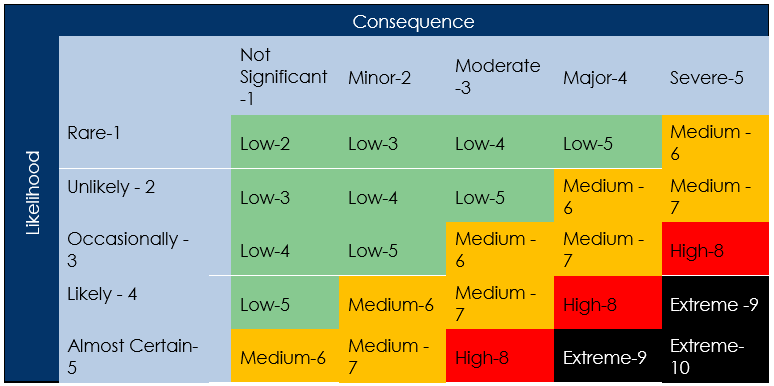

Introduction
The Decent Care Risk Management Policy guides how risk is assessed and responded to in managing and delivering NDIS Service. Decent Care is committed to ensuring that identified risks are managed to maximise ongoing viability, quality and accountability of services.
Scope
This policy applies to the Managing Directors and team members and any other representative of Decent Care.
Policy
Decent Care is committed to the identification and management of risks that may arise in governance, team members duties, as well as the day to day operations with delivering service. The Risk Management Framework is incorporated into all areas of the organisation have specific processes of identification, reporting, analysis, treatment and review. Risk is managed across three core domains of the service:
Procedure
Risk management plan
Risk management tools are maintained for the organisation which details identified risks and actions taken to control or minimise those risks.
Participant Risk:
Vulnerability Assessment (My Safety Plan)
- Each participants individual risks are identified on entry into the service through the My Safety Assessment, that identifies their individual risks and includes a vulnerability assessment process. This process identifies participants who are vulnerable in terms of violence, abuse, neglect, exploitation and discrimination when receiving supports in the community.
- This assessment also identifies the extent to which individual participant rely on their service in the event of a natural disaster or emergency.
- The outcome of the assessment informs senior team members of the level of service oversight in service provision, as well as priority of support in an emergency that is required.
Goal Plan Activity Risk Assessment
Individual goal plans identify risks associated with activities being undertaken within the plan are identified and managed to mitigate, or minimise the impact of identified risks.
Specialised Plan Risk Management (Medical Emergency Plan)
Where participants have a specialised plan relating to high intensity needs, the associated risk assessment and management strategies are documented within the plan.
This relates to:
- Mealtime Management
- Behaviour Support
The risk management strategy provides guidance to team members when complications arise from the specialised support. e.g mealtime management.
Natural Disaster and Emergency Management Plan
Each participant of whom Decent Care is the primary support will be provided with information about the Emergency Management and Natural Disaster Plan See also Emergency Management Planning Policy and Procedure. This plan identifies specific processes related to Decent Care response to emergencies, including an Emergency Officer who leads the processes of supporting team members and participants.
Team members risks when undertaking role requirements
A WHS Register that is contained within the organisation’s Master Register and is reviewed monthly. Identified team members hazards or incidents inform the plan with monthly strategic planning to develop control mechanisms.
Organisational Risk Management:
An organisational Risk Management Plan is contained within the Master Register and is reviewed monthly as required under the underpinning governance and continuous improvement model. The Risk Management plan addresses:
- Financial risk
- Work Health and Safety Risk
- Information management risk
- Human Resource Risk
- Governance risk
- Complaints
- Incident Management
- Emergency and Disaster Management
Identifying and managing risk
Decent Care risk management framework
Decent Care regularly identifies risks to the organisation and services that are provided. In doing this, the organisation takes into consideration:
- Feedback from participants, their family and carers
- Participant assessments
- Feedback from team members
- Workplace inspections, including the participant’s home
- Workplace Hazard Reports
- Incident Reports
- Work practices
- Changing needs of participants and team members
- Advice from professionals and/or stakeholders
- External changes such as policy and legislation
- Market movements
- Team members training
- Provision of information
- The use of safe or safer equipment
- Maintaining adequate insurance
- Personal checks including referee checks, driver licences, motor vehicle registrations, professional registrations, criminal history checks
- Review of policies and procedures.
The following risk matrix is used to assess each risk:

Decent Care uses the following processes to determine what action will be taken in relation to each risk identified and monitor implementation of controls by:
- Assessing the effectiveness of controls put in place
- Liaise with participants and team members to ensure the controls are effective
- The Managing Directors reviews controls with the team members and alter controls as required
- Monthly review of the risk registers.
- Undertaking testing activity of the Emergency Management strategies
Recording improvements
Improvements implemented as a result of risk management reviews and planning are recorded in the Continuous Improvement Register to ensure that they are implemented, monitored and evaluated. The Managing Directors are responsible for monitoring the plan.
Responsibilities
The Managing Directors are responsible for:
- Reviewing this policy on an annual basis to ensure that the policy is operating effectively
- Reviewing the Organisation Risk Register, WHS Register and Participant Vulnerability Register and determining appropriate management strategies at monthly Executive Management Meetings
- Actively testing the Emergency Management Plan, and adjusting according to the context of the natural disaster or Emergency Plan – See also Emergency Management Policy and Procedure
- Ensuring all WHS hazards and risks are entered onto the WHS Register
- Monitoring actions being undertaken to manage risk to ensure effectiveness.
Program Managers are responsible for:
- Ensuring all participants are listed and assessed on the Participant Vulnerability Register
- Undertaking check in of participants who have been identified as vulnerable on the Participant Risk Register
- Ensuring team members are trained in identifying and responding to risk across all levels
- Where the participant has consented, sharing risk with other providers who are involved in the participant care.
Team Members are responsible for:
- Identifying and reporting participant risk to their Program Manager
- Identifying and reporting WHS risk through the completion of the WHS Hazard and Incident Reporting forms
- Updating Environmental Risk Assessment forms when emerging risks present and entering the risk onto the participant database
- Following direction provided by the Managing Directors and Program Managers in addressing identified risks.
Related Policies and Documents
- Risk Management Framework
- Emergency and Disaster Management Policy and Procedure
- Work Health and Safety Policy and Procedure
- Incident Management Policy and Procedure
- Human Resources Policy and Procedure
- Individual Planning Policy and Procedure
- Freedom from Violence, Abuse, Neglect, Exploitation and Discrimination Policy and Procedure
- WHS Risk Management Plan
- Organisation Risk Management Plan
- My Safety Assessment
- Participant Vulnerability Register
- Goal plan risk assessment
- Emergency and Disaster Management Plan